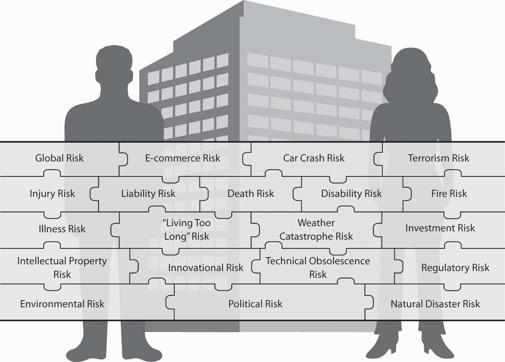
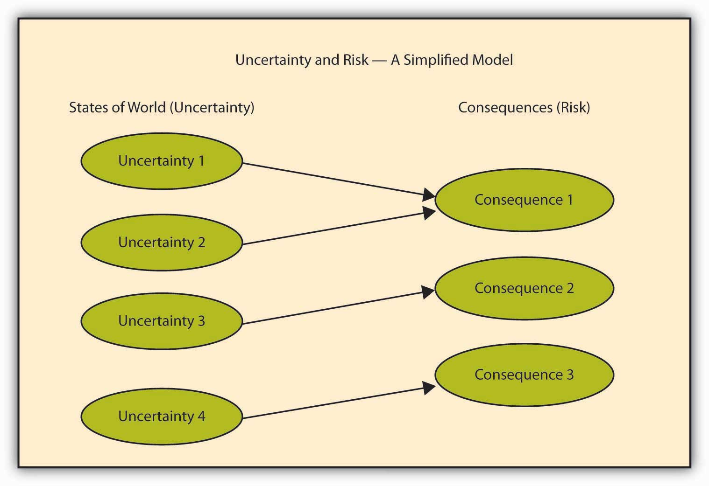
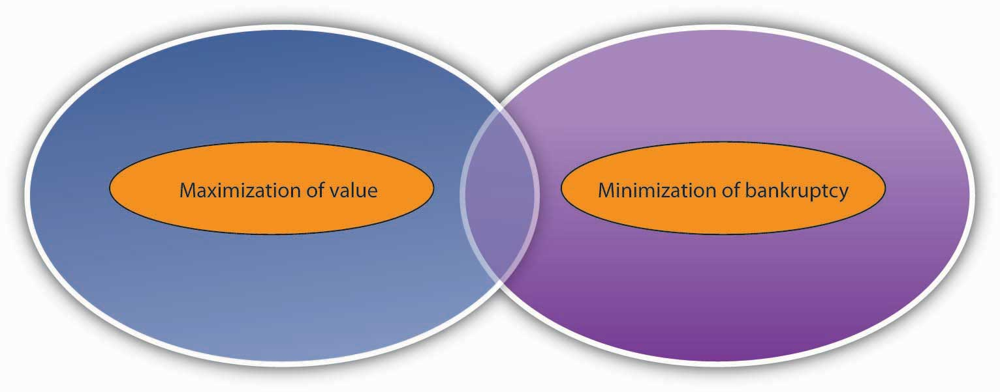
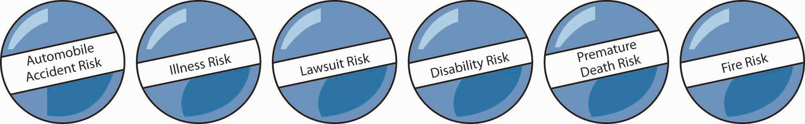
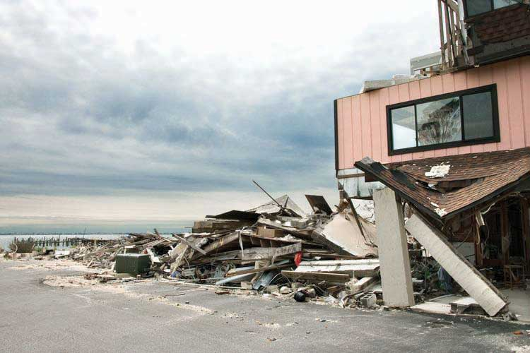
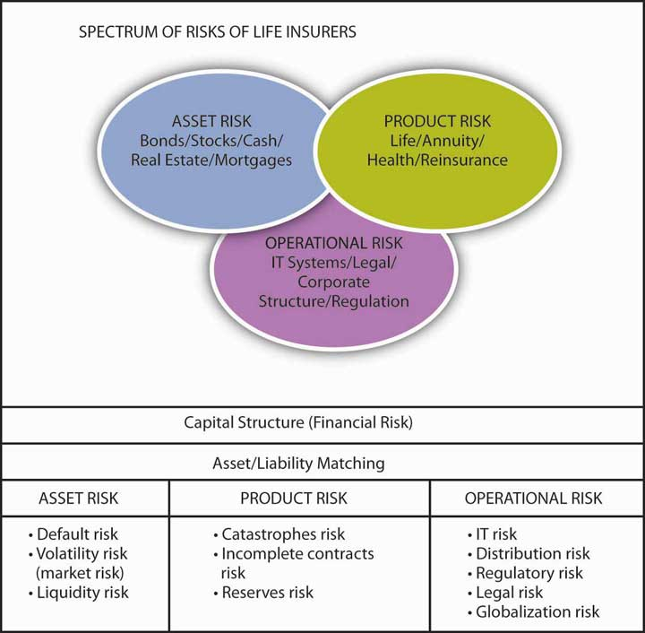

In his novel A Tale of Two Cities, set during the French Revolution of the late eighteenth century, Charles Dickens wrote, “It was the best of times; it was the worst of times.” Dickens may have been premature, since the same might well be said now, at the beginning of the twenty-first century.
When we think of large risks, we often think in terms of natural hazards such as hurricanes, earthquakes, or tornados. Perhaps man-made disasters come to mind—such as the terrorist attacks that occurred in the United States on September 11, 2001. We typically have overlooked financial crises, such as the credit crisis of 2008. However, these types of man-made disasters have the potential to devastate the global marketplace. Losses in multiple trillions of dollars and in much human suffering and insecurity are already being totaled as the U.S. Congress fights over a $700 billion bailout. The financial markets are collapsing as never before seen.
Many observers consider this credit crunch, brought on by subprime mortgage lending and deregulation of the credit industry, to be the worst global financial calamity ever. Its unprecedented worldwide consequences have hit country after country—in many cases even harder than they hit the United States.David J. Lynch, “Global Financial Crisis May Hit Hardest Outside U.S.,” USA Today, October 30, 2008. The initial thought that the trouble was more a U.S. isolated trouble “laid low by a Wall Street culture of heedless risk-taking” and the thinking was that “the U.S. will lose its status as the superpower of the global financial system…. Now everyone realizes they are in this global mess together. Reflecting that shared fate, Asian and European leaders gathered Saturday in Beijing to brainstorm ahead of a Nov. 15 international financial summit in Washington, D.C.” The world is now a global village; we’re so fundamentally connected that past regional disasters can no longer be contained locally.
We can attribute the 2008 collapse to financially risky behavior of a magnitude never before experienced. Its implications dwarf any other disastrous events. The 2008 U.S. credit markets were a financial house of cards with a faulty foundation built by unethical behavior in the financial markets:
As we can see, a basic lack of risk management (and regulators’ inattention or inability to control these overt failures) lay at the heart of the global credit crisis. This crisis started with a lack of improperly underwritten mortgages and excessive debt. Companies depend on loans and lines of credit to conduct their routine business. If such credit lines dry up, production slows down and brings the global economy to the brink of deep recession—or even depression. The snowballing effect of this failure to manage the risk associated with providing mortgage loans to unqualified home buyers has been profound, indeed. The world is in a global crisis due to the prevailing (in)action by companies and regulators who ignored and thereby increased some of the major risks associated with mortgage defaults. When the stock markets were going up and homeowners were paying their mortgages, everything looked fine and profit opportunities abounded. But what goes up must come down, as Flannery O’Conner once wrote. When interest rates rose and home prices declined, mortgage defaults became more common. This caused the expected bundled mortgage-backed securities to fail. When the mortgages failed because of greater risk taking on Wall Street, the entire house of cards collapsed.
Additional financial instruments (called credit derivatives)In essence, a credit derivative is a financial instrument issued by one firm, which guarantees payment for contracts of another party. The guarantees are provided under a second contract. Should the issuer of the second contract not perform—for example, by defaulting or going bankrupt—the second contract goes into effect. When the mortgages defaulted, the supposed guarantor did not have enough money to pay their contract obligations. This caused others (who were counting on the payment) to default as well on other obligations. This snowball effect then caused others to default, and so forth. It became a chain reaction that generated a global financial market collapse. gave the illusion of insuring the financial risk of the bundled collateralized mortgages without actually having a true foundation—claims, that underlie all of risk management.This lack of risk management cannot be blamed on lack of warning of the risk alone. Regulators and firms were warned to adhere to risk management procedures. However, these warnings were ignored in pursuit of profit and “free markets.” See “The Crash: Risk and Regulation, What Went Wrong” by Anthony Faiola, Ellen Nakashima, and Jill Drew, Washington Post, October 15, 2008, A01. Lehman Brothers represented the largest bankruptcy in history, which meant that the U.S. government (in essence) nationalized banks and insurance giant AIG. This, in turn, killed Wall Street as we previously knew it and brought about the restructuring of government’s role in society. We can lay all of this at the feet of the investment banking industry and their inadequate risk recognition and management. Probably no other risk-related event has had, and will continue to have, as profound an impact worldwide as this risk management failure (and this includes the terrorist attacks of 9/11). Ramifications of this risk management failure will echo for decades. It will affect all voters and taxpayers throughout the world and potentially change the very structure of American government.
How was risk in this situation so badly managed? What could firms and individuals have done to protect themselves? How can government measure such risks (beforehand) to regulate and control them? These and other questions come immediately to mind when we contemplate the fateful consequences of this risk management fiasco.
With his widely acclaimed book Against the Gods: The Remarkable Story of Risk (New York City: John Wiley & Sons, 1996), Peter L. Bernstein teaches us how human beings have progressed so magnificently with their mathematics and statistics to overcome the unknown and the uncertainty associated with risk. However, no one fully practiced his plans of how to utilize the insights gained from this remarkable intellectual progression. The terrorist events of September 11, 2001; Hurricanes Katrina, Wilma, and Rita in 2005 and Hurricane Ike in 2008; and the financial meltdown of September 2008 have shown that knowledge of risk management has never, in our long history, been more important. Standard risk management practice would have identified subprime mortgages and their bundling into mortgage-backed securities as high risk. As such, people would have avoided these investments or wouldn’t have put enough money into reserve to be able to withstand defaults. This did not happen. Accordingly, this book may represent one of the most critical topics of study that the student of the twenty-first century could ever undertake.
Risk management will be a major focal point of business and societal decision making in the twenty-first century. A separate focused field of study, it draws on core knowledge bases from law, engineering, finance, economics, medicine, psychology, accounting, mathematics, statistics, and other fields to create a holistic decision-making framework that is sustainable and value-enhancing. This is the subject of this book.
In this chapter we discuss the following:
Our “links” section in each chapter ties each concept and objective in the chapter into the realm of globally or holistically managing risk. The solutions to risk problems require a compilation of techniques and perspectives, shown as the pieces completing a puzzle of the myriad of personal and business risks we face. These are shown in the “connection” puzzle in Figure 1.1 "Complete Picture of the Holistic Risk Puzzle". As we progress through the text, each chapter will begin with a connection section to show how links between personal and enterprise holistic risk picture arise.
Figure 1.1 Complete Picture of the Holistic Risk Puzzle
Even in chapters that you may not think apply to the individual, such as commercial risk, the connection will highlight the underlying relationships among different risks. Today, management of personal and commercial risks requires coordination of all facets of the risk spectrum. On a national level, we experienced the move toward holistic risk management with the creation of the Department of Homeland Security after the terrorist attacks of September 11, 2001.See http://www.dhs.gov/dhspublic/. After Hurricane Katrina struck in 2005, the impasse among local, state, and federal officials elevated the need for coordination to achieve efficient holistic risk management in the event of a megacatastrophe.The student is invited to read archival articles from all media sources about the calamity of the poor response to the floods in New Orleans. The insurance studies of Virginia Commonwealth University held a town hall meeting the week after Katrina to discuss the natural and man-made disasters and their impact both financially and socially. The PowerPoint basis for the discussion is available to the readers. The global financial crisis of 2008 created unprecedented coordination of regulatory actions across countries and, further, governmental involvement in managing risk at the enterprise level—essentially a global holistic approach to managing systemic financial riskRisk that affects everything, as opposed to individuals being involved in risky enterprises.. Systemic risk is a risk that affects everything, as opposed to individuals being involved in risky enterprises. In the next section, we define all types of risks more formally.
The notion of “risk” and its ramifications permeate decision-making processes in each individual’s life and business outcomes and of society itself. Indeed, risk, and how it is managed, are critical aspects of decision making at all levels. We must evaluate profit opportunities in business and in personal terms in terms of the countervailing risks they engender. We must evaluate solutions to problems (global, political, financial, and individual) on a risk-cost, cost-benefit basis rather than on an absolute basis. Because of risk’s all-pervasive presence in our daily lives, you might be surprised that the word “risk” is hard to pin down. For example, what does a businessperson mean when he or she says, “This project should be rejected since it is too risky”? Does it mean that the amount of loss is too high or that the expected value of the loss is high? Is the expected profit on the project too small to justify the consequent risk exposure and the potential losses that might ensue? The reality is that the term “risk” (as used in the English language) is ambiguous in this regard. One might use any of the previous interpretations. Thus, professionals try to use different words to delineate each of these different interpretations. We will discuss possible interpretations in what follows.
We all have a personal intuition about what we mean by the term “risk.” We all use and interpret the word daily. We have all felt the excitement, anticipation, or anxiety of facing a new and uncertain event (the “tingling” aspect of risk taking). Thus, actually giving a single unambiguous definition of what we mean by the notion of “risk” proves to be somewhat difficult. The word “risk” is used in many different contexts. Further, the word takes many different interpretations in these varied contexts. In all cases, however, the notion of risk is inextricably linked to the notion of uncertaintyHaving two potential outcomes for an event or situation.. We provide here a simple definition of uncertainty: Uncertainty is having two potential outcomes for an event or situation.
Certainty refers to knowing something will happen or won’t happen. We may experience no doubt in certain situations. Nonperfect predictability arises in uncertain situations. Uncertainty causes the emotional (or physical) anxiety or excitement felt in uncertain volatile situations. Gambling and participation in extreme sports provide examples. Uncertainty causes us to take precautions. We simply need to avoid certain business activities or involvements that we consider too risky. For example, uncertainty causes mortgage issuers to demand property purchase insurance. The person or corporation occupying the mortgage-funded property must purchase insurance on real estate if we intend to lend them money. If we knew, without a doubt, that something bad was about to occur, we would call it apprehension or dread. It wouldn’t be risk because it would be predictable. Risk will be forever, inextricably linked to uncertainty.
As we all know, certainty is elusive. Uncertainty and risk are pervasive. While we typically associate “risk” with unpleasant or negative events, in reality some risky situations can result in positive outcomes. Take, for example, venture capital investing or entrepreneurial endeavors. Uncertainty about which of several possible outcomes will occur circumscribes the meaning of risk. Uncertainty lies behind the definition of risk.
While we link the concept of risk with the notion of uncertainty, risk isn’t synonymous with uncertainty. A person experiencing the flu is not necessarily the same as the virus causing the flu. Risk isn’t the same as the underlying prerequisite of uncertainty. RiskUncertainty about a future outcome, particularly the consequences of a negative outcome. (intuitively and formally) has to do with consequences (both positive and negative); it involves having more than two possible outcomes (uncertainty).See http://www.dhs.gov/dhspublic/. The consequences can be behavioral, psychological, or financial, to name a few. Uncertainty also creates opportunities for gain and the potential for loss. Nevertheless, if no possibility of a negative outcome arises at all, even remotely, then we usually do not refer to the situation as having risk (only uncertainty) as shown in Figure 1.2 "Uncertainty as a Precondition to Risk".
Figure 1.2 Uncertainty as a Precondition to Risk
Table 1.1 Examples of Consequences That Represent Risks
| States of the World —Uncertainty | Consequences—Risk |
|---|---|
| Could or could not get caught driving under the influence of alcohol | Loss of respect by peers (non-numerical); higher car insurance rates or cancellation of auto insurance at the extreme. |
| Potential variety in interest rates over time | Numerical variation in money returned from investment. |
| Various levels of real estate foreclosures | Losses from financial instruments linked to mortgage defaults or some domino effect such as the one that starts this chapter. |
| Smoking cigarettes at various numbers per day | Bad health changes (such as cancer and heart disease) and problems shortening length and quality of life. Inability to contract with life insurance companies at favorable rates. |
| Power plant and automobile emission of greenhouse gasses (CO2) | Global warming, melting of ice caps, rising of oceans, increase in intensity of weather events, displacement of populations; possible extinction or mutations in some populations. |
In general, we widely believe in an a priori (previous to the event) relation between negative risk and profitability. Namely, we believe that in a competitive economic market, we must take on a larger possibility of negative risk if we are to achieve a higher return on an investment. Thus, we must take on a larger possibility of negative risk to receive a favorable rate of return. Every opportunity involves both risk and return.
In a world of uncertainty, we regard risk as encompassing the potential provision of both an opportunity for gains as well as the negative prospect for losses. See Figure 1.3 "Roles (Objectives) Underlying the Definition of Risk"—a Venn diagram to help you visualize risk-reward outcomes. For the enterprise and for individuals, risk is a component to be considered within a general objective of maximizing value associated with risk. Alternatively, we wish to minimize the dangers associated with financial collapse or other adverse consequences. The right circle of the figure represents mitigation of adverse consequences like failures. The left circle represents the opportunities of gains when risks are undertaken. As with most Venn diagrams, the two circles intersect to create the set of opportunities for which people take on risk (Circle 1) for reward (Circle 2).
Figure 1.3 Roles (Objectives) Underlying the Definition of Risk
Identify the overlapping area as the set in which we both minimize risk and maximize value.
Figure 1.3 "Roles (Objectives) Underlying the Definition of Risk" will help you conceptualize the impact of risk. Risk permeates the spectrum of decision making from goals of value maximization to goals of insolvency minimization (in game theory terms, maximin). Here we see that we seek to add value from the opportunities presented by uncertainty (and its consequences). The overlapping area shows a tight focus on minimizing the pure losses that might accompany insolvency or bankruptcy. The 2008 financial crisis illustrates the consequences of exploiting opportunities presented by risk; of course, we must also account for the risk and can’t ignore the requisite adverse consequences associated with insolvency. Ignoring risk represents mismanagement of risk in the opportunity-seeking context. It can bring complete calamity and total loss in the pure loss-avoidance context.
We will discuss this trade-off more in depth later in the book. Managing risks associated with the context of minimization of losses has succeeded more than managing risks when we use an objective of value maximization. People model catastrophic consequences that involve risk of loss and insolvency in natural disaster contexts, using complex and innovative statistical techniques. On the other hand, risk management within the context of maximizing value hasn’t yet adequately confronted the potential for catastrophic consequences. The potential for catastrophic human-made financial risk is most dramatically illustrated by the fall 2008 financial crisis. No catastrophic models were considered or developed to counter managers’ value maximization objective, nor were regulators imposing risk constraints on the catastrophic potential of the various financial derivative instruments.
We previously noted that risk is a consequence of uncertainty—it isn’t uncertainty itself. To broadly cover all possible scenarios, we don’t specify exactly what type of “consequence of uncertainty” we were considering as risk. In the popular lexicon of the English language, the “consequence of uncertainty” is that the observed outcome deviates from what we had expected. Consequences, you will recall, can be positive or negative. If the deviation from what was expected is negative, we have the popular notion of risk. “Risk” arises from a negative outcome, which may result from recognizing an uncertain situation.
If we try to get an ex-post (i.e., after the fact) risk measure, we can measure risk as the perceived variability of future outcomes. Actual outcomes may differ from expectations. Such variability of future outcomes corresponds to the economist’s notion of risk. Risk is intimately related to the “surprise an outcome presents.” Various actual quantitative risk measurements provide the topic of Chapter 2 "Risk Measurement and Metrics". Another simple example appears by virtue of our day-to-day expectations. For example, we expect to arrive on time to a particular destination. A variety of obstacles may stop us from actually arriving on time. The obstacles may be within our own behavior or stand externally. However, some uncertainty arises as to whether such an obstacle will happen, resulting in deviation from our previous expectation. As another example, when American Airlines had to ground all their MD-80 planes for government-required inspections, many of us had to cancel our travel plans and couldn’t attend important planned meetings and celebrations. Air travel always carries with it the possibility that we will be grounded, which gives rise to uncertainty. In fact, we experienced this negative event because it was externally imposed upon us. We thus experienced a loss because we deviated from our plans. Other deviations from expectations could include being in an accident rather than a fun outing. The possibility of lower-than-expected (negative) outcomes becomes central to the definition of risk, because so-called losses produce the negative quality associated with not knowing the future. We must then manage the negative consequences of the uncertain future. This is the essence of risk management.
Our perception of risk arises from our perception of and quantification of uncertainty. In scientific settings and in actuarial and financial contexts, risk is usually expressed in terms of the probability of occurrence of adverse events. In other fields, such as political risk assessment, risk may be very qualitative or subjective. This is also the subject of Chapter 2 "Risk Measurement and Metrics".
An in-depth exploration into individual and firms’ attitudes toward risk appears in Chapter 3 "Risk Attitudes: Expected Utility Theory and Demand for Hedging". Here we touch upon this important subject, since it is key to understanding behavior associated with risk management activities. The following box illustrates risk as a psychological process. Different people have different attitudes toward the risk-return tradeoff. People are risk averseRefers to shying away from risks and preferring to have as much security and certainty as is reasonably affordable. when they shy away from risks and prefer to have as much security and certainty as is reasonably affordable in order to lower their discomfort level. They would be willing to pay extra to have the security of knowing that unpleasant risks would be removed from their lives. Economists and risk management professionals consider most people to be risk averse. So, why do people invest in the stock market where they confront the possibility of losing everything? Perhaps they are also seeking the highest value possible for their pensions and savings and believe that losses may not be pervasive—very much unlike the situation in the fall of 2008.
A risk seekerSomeone who will enter into an endeavor as long as a positive long run return on the money is possible, however unlikely., on the other hand, is not simply the person who hopes to maximize the value of retirement investments by investing the stock market. Much like a gambler, a risk seeker is someone who will enter into an endeavor (such as blackjack card games or slot machine gambling) as long as a positive long run return on the money is possible, however unlikely.
Finally, an entity is said to be risk neutralWhen one’s risk preference lies between the extremes of risk averse and risk seeking. when its risk preference lies in between these two extremes. Risk neutral individuals will not pay extra to have the risk transferred to someone else, nor will they pay to engage in a risky endeavor. To them, money is money. They don’t pay for insurance, nor will they gamble. Economists consider most widely held or publicly traded corporations as making decisions in a risk-neutral manner since their shareholders have the ability to diversify away riskTo take actions that are seemingly not related or have opposite effects or to invest in many possible unrelated products or entities such that the impact of any one event decreases the overall risk.—to take actions that seemingly are not related or have opposite effects, or to invest in many possible unrelated products or entities such that the impact of any one event decreases the overall risk. Risks that the corporation might choose to transfer remain for diversification. In the fall of 2008, everyone felt like a gambler. This emphasizes just how fluidly risk lies on a continuum like that in Figure 1.3 "Roles (Objectives) Underlying the Definition of Risk". Financial theories and research pay attention to the nature of the behavior of firms in their pursuit to maximize value. Most theories agree that firms work within risk limits to ensure they do not “go broke.” In the following box we provide a brief discussion of people’s attitudes toward risk. A more elaborate discussion can be found in Chapter 3 "Risk Attitudes: Expected Utility Theory and Demand for Hedging".
Early in our lives, while protected by our parents, we enjoy security. But imagine yourself as your parents (if you can) during the first years of your life. A game called “Risk Balls” was created to illustrate tangibly how we handle and transfer risk.Etti G. Baranoff, “The Risk Balls Game: Transforming Risk and Insurance Into Tangible Concept,” Risk Management & Insurance Review 4, no. 2 (2001): 51–59. See, for example, Figure 1.4 "Risk Balls" below. The balls represent risks, such as dying prematurely, losing a home to fire, or losing one’s ability to earn an income because of illness or injury. Risk balls bring the abstract and fortuitousA matter of chance. (accidental or governed by chance) nature of risk into a more tangible context. If you held these balls, you would want to dispose of them as soon as you possibly could. One way to dispose of risks (represented by these risk balls) is by transferring the risk to insurance companies or other firms that specialize in accepting risks. We will cover the benefits of transferring risk in many chapters of this text.
Right now, we focus on the risk itself. What do you actually feel when you hold the risk balls? Most likely, your answer would be, “insecurity and uneasiness.” We associate risks with fears. A person who is risk averse—that is, a “normal person” who shies away from risk and prefers to have as much security and certainty as possible—would wish to lower the level of fear. Professionals consider most of us risk averse. We sleep better at night when we can transfer risk to the capital market. The capital market usually appears to us as an insurance company or the community at large.
As risk-averse individuals, we will often pay in excess of the expected cost just to achieve some certainty about the future. When we pay an insurance premium, for example, we forgo wealth in exchange for an insurer’s promise to pay covered losses. Some risk transfer professionals refer to premiums as an exchange of a certain loss (the premium) for uncertain losses that may cause us to lose sleep. One important aspect of this kind of exchange: premiums are larger than are expected losses. Those who are willing to pay only the average loss as a premium would be considered risk neutral. Someone who accepts risk at less than the average loss, perhaps even paying to add risk—such as through gambling—is a risk seeker.
Figure 1.4 Risk Balls
Most risk professionals define risk in terms of an expected deviation of an occurrence from what they expect—also known as anticipated variabilityAn expected deviation of an occurrence from what one expects.. In common English language, many people continue to use the word “risk” as a noun to describe the enterprise, property, person, or activity that will be exposed to losses. In contrast, most insurance industry contracts and education and training materials use the term exposureTerm used to describe the enterprise, property, person, or activity facing a potential loss. to describe the enterprise, property, person, or activity facing a potential loss. So a house built on the coast near Galveston, Texas, is called an “exposure unit” for the potentiality of loss due to a hurricane. Throughout this text, we will use the terms “exposure” and “risk” to note those units that are exposed to losses.
Some people say that Eskimos have a dozen or so words to name or describe snow. Likewise, professional people who study risk use several words to designate what others intuitively and popularly know as “risk.” Professionals note several different ideas for risk, depending on the particular aspect of the “consequences of uncertainty” that they wish to consider. Using different terminology to describe different aspects of risk allows risk professionals to reduce any confusion that might arise as they discuss risks.
As we noted in Table 1.2 "Examples of Pure versus Speculative Risk Exposures", risk professionals often differentiate between pure riskRisk that features some chance of loss and no chance of gain. that features some chance of loss and no chance of gain (e.g., fire risk, flood risk, etc.) and those they refer to as speculative risk. Speculative risksRisk that features a chance to either gain or lose. feature a chance to either gain or lose (including investment risk, reputational risk, strategic risk, etc.). This distinction fits well into Figure 1.3 "Roles (Objectives) Underlying the Definition of Risk". The right-hand side focuses on speculative risk. The left-hand side represents pure risk. Risk professionals find this distinction useful to differentiate between types of risk.
Some risks can be transferred to a third party—like an insurance company. These third parties can provide a useful “risk management solution.” Some situations, on the other hand, require risk transfers that use capital markets, known as hedging or securitizations. HedgingActivities that are taken to reduce or eliminate risks. refers to activities that are taken to reduce or eliminate risks. SecuritizationPackaging and transferring the insurance risks to the capital markets through the issuance of a financial security. is the packaging and transferring of insurance risks to the capital markets through the issuance of a financial security. We explain such risk retention in Chapter 4 "Evolving Risk Management: Fundamental Tools" and Chapter 5 "The Evolution of Risk Management: Enterprise Risk Management". Risk retentionWhen a firm retains its risk, self-insuring against adverse contingencies out of its own cash flows. is when a firm retains its risk. In essence it is self-insuring against adverse contingencies out of its own cash flows. For example, firms might prefer to capture up-side return potential at the same time that they mitigate while mitigating the downside loss potential.
In the business environment, when evaluating the expected financial returns from the introduction of a new product (which represents speculative risk), other issues concerning product liability must be considered. Product liabilitySituation in which a manufacturer may be liable for harm caused by use of its product, even if the manufacturer was responsible in producing it. refers to the possibility that a manufacturer may be liable for harm caused by use of its product, even if the manufacturer was reasonable in producing it.
Table 1.2 "Examples of Pure versus Speculative Risk Exposures" provides examples of the pure versus speculative risks dichotomy as a way to cross classify risks. The examples provided in Table 1.2 "Examples of Pure versus Speculative Risk Exposures" are not always a perfect fit into the pure versus speculative risk dichotomy since each exposure might be regarded in alternative ways. Operational risks, for example, can be regarded as operations that can cause only loss or operations that can provide also gain. However, if it is more specifically defined, the risks can be more clearly categorized.
The simultaneous consideration of pure and speculative risks within the objectives continuum of Figure 1.3 "Roles (Objectives) Underlying the Definition of Risk" is an approach to managing risk, which is known as enterprise risk management (ERM)The simultaneous consideration of all risks and the management of risks in an enterprise-wide (and risk-wide) context.. ERM is one of today’s key risk management approaches. It considers all risks simultaneously and manages risk in a holistic or enterprise-wide (and risk-wide) context. ERM was listed by the Harvard Business Review as one of the key breakthrough areas in their 2004 evaluation of strategic management approaches by top management.L. Buchanan, “Breakthrough Ideas for 2004,” Harvard Business Review 2 (2004): 13–16. In today’s environment, identifying, evaluating, and mitigating all risks confronted by the entity is a key focus. Firms that are evaluated by credit rating organizations such as Moody’s or Standard & Poor’s are required to show their activities in the areas of enterprise risk management. As you will see in later chapters, the risk manager in businesses is no longer buried in the tranches of the enterprise. Risk managers are part of the executive team and are essential to achieving the main objectives of the enterprise. A picture of the enterprise risk map of life insurers is shown later in Figure 1.5 "A Photo of Galveston Island after Hurricane Ike".
Table 1.2 Examples of Pure versus Speculative Risk Exposures
| Pure Risk—Loss or No Loss Only | Speculative Risk—Possible Gains or Losses |
|---|---|
| Physical damage risk to property (at the enterprise level) such as caused by fire, flood, weather damage | Market risks: interest risk, foreign exchange risk, stock market risk |
| Liability risk exposure (such as products liability, premise liability, employment practice liability) | Reputational risk |
| Innovational or technical obsolescence risk | Brand risk |
| Operational risk: mistakes in process or procedure that cause losses | Credit risk (at the individual enterprise level) |
| Mortality and morbidity risk at the individual level | Product success risk |
| Intellectual property violation risks | Public relation risk |
| Environmental risks: water, air, hazardous-chemical, and other pollution; depletion of resources; irreversible destruction of food chains | Population changes |
| Natural disaster damage: floods, earthquakes, windstorms | Market for the product risk |
| Man-made destructive risks: nuclear risks, wars, unemployment, population changes, political risks | Regulatory change risk |
| Mortality and morbidity risk at the societal and global level (as in pandemics, social security program exposure, nationalize health care systems, etc.) | Political risk |
| Accounting risk | |
| Longevity risk at the societal level | |
| Genetic testing and genetic engineering risk | |
| Investment risk | |
| Research and development risk |
Within the class of pure risk exposures, it is common to further explore risks by use of the dichotomy of personal property versus liability exposure risk.
Because the financial consequences of all risk exposures are ultimately borne by people (as individuals, stakeholders in corporations, or as taxpayers), it could be said that all exposures are personal. Some risks, however, have a more direct impact on people’s individual lives. Exposure to premature death, sickness, disability, unemployment, and dependent old age are examples of personal loss exposures when considered at the individual/personal level. An organization may also experience loss from these events when such events affect employees. For example, social support programs and employer-sponsored health or pension plan costs can be affected by natural or man-made changes. The categorization is often a matter of perspective. These events may be catastrophic or accidental.
Property owners face the possibility of both direct and indirect (consequential) losses. If a car is damaged in a collision, the direct loss is the cost of repairs. If a firm experiences a fire in the warehouse, the direct cost is the cost of rebuilding and replacing inventory. Consequential or indirect lossesA nonphysical loss such as loss of business. are nonphysical losses such as loss of business. For example, a firm losing its clients because of street closure would be a consequential loss. Such losses include the time and effort required to arrange for repairs, the loss of use of the car or warehouse while repairs are being made, and the additional cost of replacement facilities or lost productivity. Property loss exposuresLosses associated with both real property such as buildings and personal property such as automobiles and the contents of a building. are associated with both real property such as buildings and personal property such as automobiles and the contents of a building. A property is exposed to losses because of accidents or catastrophes such as floods or hurricanes.
The legal system is designed to mitigate risks and is not intended to create new risks. However, it has the power of transferring the risk from your shoulders to mine. Under most legal systems, a party can be held responsible for the financial consequences of causing damage to others. One is exposed to the possibility of liability lossLoss caused by a third party who is considered at fault. (loss caused by a third party who is considered at fault) by having to defend against a lawsuit when he or she has in some way hurt other people. The responsible party may become legally obligated to pay for injury to persons or damage to property. Liability risk may occur because of catastrophic loss exposure or because of accidental loss exposure. Product liability is an illustrative example: a firm is responsible for compensating persons injured by supplying a defective product, which causes damage to an individual or another firm.
Catastrophic risk is a concentration of strong, positively correlated risk exposures, such as many homes in the same location. A loss that is catastrophic and includes a large number of exposures in a single location is considered a nonaccidental risk. All homes in the path will be damaged or destroyed when a flood occurs. As such the flood impacts a large number of exposures, and as such, all these exposures are subject to what is called a fundamental riskRisks that are pervasive to and affect the whole economy, as opposed to accidental risk for an individual.. Generally these types of risks are too pervasive to be undertaken by insurers and affect the whole economy as opposed to accidental risk for an individual. Too many people or properties may be hurt or damaged in one location at once (and the insurer needs to worry about its own solvency). Hurricanes in Florida and the southern and eastern shores of the United States, floods in the Midwestern states, earthquakes in the western states, and terrorism attacks are the types of loss exposures that are associated with fundamental risk. Fundamental risks are generally systemic and nondiversifiable.
Figure 1.5 A Photo of Galveston Island after Hurricane Ike
Many pure risks arise due to accidental causes of loss, not due to man-made or intentional ones (such as making a bad investment). As opposed to fundamental losses, noncatastrophic accidental losses, such as those caused by fires, are considered particular risks. Often, when the potential losses are reasonably bounded, a risk-transfer mechanism, such as insurance, can be used to handle the financial consequences.
In summary, exposures are units that are exposed to possible losses. They can be people, businesses, properties, and nations that are at risk of experiencing losses. The term “exposures” is used to include all units subject to some potential loss.
Another possible categorization of exposures is as follows:
Pure and speculative risks are not the only way one might dichotomize risks. Another breakdown is between catastrophic risks, such as flood and hurricanes, as opposed to accidental losses such as those caused by accidents such as fires. Another differentiation is by systemic or nondiversifiable risks, as opposed to idiosyncratic or diversifiable risks; this is explained below.
As noted above, another important dichotomy risk professionals use is between diversifiable and nondiversifiable risk. Diversifiable risksRisks whose adverse consequences can be mitigated simply by having a well-diversified portfolio of risk exposures. are those that can have their adverse consequences mitigated simply by having a well-diversified portfolio of risk exposures. For example, having some factories located in nonearthquake areas or hotels placed in numerous locations in the United States diversifies the risk. If one property is damaged, the others are not subject to the same geographical phenomenon causing the risks. A large number of relatively homogeneous independent exposure units pooled together in a portfolio can make the average, or per exposure, unit loss much more predictable, and since these exposure units are independent of each other, the per-unit consequences of the risk can then be significantly reduced, sometimes to the point of being ignorable. These will be further explored in a later chapter about the tools to mitigate risks. Diversification is the core of the modern portfolio theory in finance and in insurance. Risks, which are idiosyncraticRisks viewed as being amenable to having their financial consequences reduced or eliminated by holding a well-diversified portfolio. (with particular characteristics that are not shared by all) in nature, are often viewed as being amenable to having their financial consequences reduced or eliminated by holding a well-diversified portfolio.
Systemic risks that are shared by all, on the other hand, such as global warming, or movements of the entire economy such as that precipitated by the credit crisis of fall 2008, are considered nondiversifiable. Every asset or exposure in the portfolio is affected. The negative effect does not go away by having more elements in the portfolio. This will be discussed in detail below and in later chapters. The field of risk management deals with both diversifiable and nondiversifiable risks. As the events of September 2008 have shown, contrary to some interpretations of financial theory, the idiosyncratic risks of some banks could not always be diversified away. These risks have shown they have the ability to come back to bite (and poison) the entire enterprise and others associated with them.
Table 1.3 "Examples of Risk Exposures by the Diversifiable and Nondiversifiable Categories" provides examples of risk exposures by the categories of diversifiable and nondiversifiable risk exposures. Many of them are self explanatory, but the most important distinction is whether the risk is unique or idiosyncratic to a firm or not. For example, the reputation of a firm is unique to the firm. Destroying one’s reputation is not a systemic risk in the economy or the market-place. On the other hand, market risk, such as devaluation of the dollar is systemic risk for all firms in the export or import businesses. In Table 1.3 "Examples of Risk Exposures by the Diversifiable and Nondiversifiable Categories" we provide examples of risks by these categories. The examples are not complete and the student is invited to add as many examples as desired.
Table 1.3 Examples of Risk Exposures by the Diversifiable and Nondiversifiable Categories
| Diversifiable Risk—Idiosyncratic Risk | Nondiversifiable Risks—Systemic Risk |
|---|---|
| • Reputational risk | • Market risk |
| • Brand risk | • Regulatory risk |
| • Credit risk (at the individual enterprise level) | • Environmental risk |
| • Product risk | • Political risk |
| • Legal risk | • Inflation and recession risk |
| • Physical damage risk (at the enterprise level) such as fire, flood, weather damage | • Accounting risk |
| • Liability risk (products liability, premise liability, employment practice liability) | • Longevity risk at the societal level |
| • Innovational or technical obsolesce risk | • Mortality and morbidity risk at the societal and global level (pandemics, social security program exposure, nationalize health care systems, etc.) |
| • Operational risk | |
| • Strategic risk | |
| • Longevity risk at the individual level | |
| • Mortality and morbidity risk at the individual level |
As discussed above, the opportunities in the risks and the fear of losses encompass the holistic risk or the enterprise risk of an entity. The following is an example of the enterprise risks of life insurers in a map in Figure 1.6 "Life Insurers’ Enterprise Risks".Etti G. Baranoff and Thomas W. Sager, “Integrated Risk Management in Life Insurance Companies,” an award winning paper, International Insurance Society Seminar, Chicago, July 2006 and in Special Edition of the Geneva Papers on Risk and Insurance.
Since enterprise risk management is a key current concept today, the enterprise risk map of life insurers is offered here as an example. Operational risks include public relations risks, environmental risks, and several others not detailed in the map in Figure 1.4 "Risk Balls". Because operational risks are so important, they usually include a long list of risks from employment risks to the operations of hardware and software for information systems.
Figure 1.6 Life Insurers’ Enterprise Risks
Our great successes in innovation are also at the heart of the greatest risks of our lives. An ongoing concern is the electronic risk (e-risk) generated by the extensive use of computers, e-commerce, and the Internet. These risks are extensive and the exposures are becoming more defined. The box Note 1.32 "The Risks of E-exposures" below illustrates the newness and not-so-newness in our risks.
Electronic risk, or e-risk, comes in many forms. Like any property, computers are vulnerable to theft and employee damage (accidental or malicious). Certain components are susceptible to harm from magnetic or electrical disturbance or extremes of temperature and humidity. More important than replaceable hardware or software is the data they store; theft of proprietary information costs companies billions of dollars. Most data theft is perpetrated by employees, but “netspionage”—electronic espionage by rival companies—is on the rise.
Companies that use the Internet commercially—who create and post content or sell services or merchandise—must follow the laws and regulations that traditional businesses do and are exposed to the same risks. An online newsletter or e-zine can be sued for libel, defamation, invasion of privacy, or misappropriation (e.g., reproducing a photograph without permission) under the same laws that apply to a print newspaper. Web site owners and companies conducting business over the Internet have three major exposures to protect: intellectual property (copyrights, patents, trade secrets); security (against viruses and hackers); and business continuity (in case of system crashes).
All of these losses are covered by insurance, right? Wrong. Some coverage is provided through commercial property and liability policies, but traditional insurance policies were not designed to include e-risks. In fact, standard policies specifically exclude digital risks (or provide minimal coverage). Commercial property policies cover physical damage to tangible assets—and computer data, software, programs, and networks are generally not counted as tangible property. (U.S. courts are still debating the issue.)
This coverage gap can be bridged either by buying a rider or supplemental coverage to the traditional policies or by purchasing special e-risk or e-commerce coverage. E-risk property policies cover damages to the insured’s computer system or Web site, including lost income because of a computer crash. An increasing number of insurers are offering e-commerce liability policies that offer protection in case the insured is sued for spreading a computer virus, infringing on property or intellectual rights, invading privacy, and so forth.
Cybercrime is just one of the e-risk-related challenges facing today’s risk managers. They are preparing for it as the world evolves faster around cyberspace, evidenced by record-breaking online sales during the 2005 Christmas season.
Sources: Harry Croydon, “Making Sense of Cyber-Exposures,” National Underwriter, Property & Casualty/Risk & Benefits Management Edition, 17 June 2002; Joanne Wojcik, “Insurers Cut E-Risks from Policies,” Business Insurance, 10 September 2001; Various media resources at the end of 2005 such as Wall Street Journal and local newspapers.
Today, there is no media that is not discussing the risks that brought us to the calamity we are enduring during our current financial crisis. Thus, as opposed to the megacatastrophes of 2001 and 2005, our concentration is on the failure of risk management in the area of speculative risks or the opportunity in risks and not as much on the pure risk. A case at point is the little media coverage of the devastation of Galveston Island from Hurricane Ike during the financial crisis of September 2008. The following box describes the risks of the first decade of the new millennium.
While man-made and natural disasters are the stamps of this decade, another type of man-made disaster marks this period.Reprinted with permission from the author; Etti G. Baranoff, “Risk Management and Insurance During the Decade of September 11,” in The Day that Changed Everything? An Interdisciplinary Series of Edited Volumes on the Impact of 9/11, vol. 2. Innovative financial products without appropriate underwriting and risk management coupled with greed and lack of corporate controls brought us to the credit crisis of 2007 and 2008 and the deepest recession in a generation. The capital market has become an important player in the area of risk management with creative new financial instruments, such as Catastrophe Bonds and securitized instruments. However, the creativity and innovation also introduced new risky instruments, such as credit default swaps and mortgage-backed securities. Lack of careful underwriting of mortgages coupled with lack of understanding of the new creative “insurance” default swaps instruments and the resulting instability of the two largest remaining bond insurers are at the heart of the current credit crisis.
As such, within only one decade we see the escalation in new risk exposures at an accelerated rate. This decade can be named “the decade of extreme risks with inadequate risk management.” The late 1990s saw extreme risks with the stock market bubble without concrete financial theory. This was followed by the worst terrorist attack in a magnitude not experienced before on U.S. soil. The corporate corruption at extreme levels in corporations such as Enron just deepened the sense of extreme risks. The natural disasters of Katrina, Rita, and Wilma added to the extreme risks and were exacerbated by extraordinary mismanagement. Today, the extreme risks of mismanaged innovations in the financial markets combined with greed are stretching the field of risk management to new levels of governmental and private controls.
However, did the myopic concentration on terrorism risk derail the holistic view of risk management and preparedness? The aftermath of Katrina is a testimonial to the lack of risk management. The increase of awareness and usage of enterprise risk management (ERM) post–September 11 failed to encompass the already well-known risks of high-category hurricanes on the sustainability of New Orleans levies. The newly created holistic Homeland Security agency, which houses FEMA, not only did not initiate steps to avoid the disaster, it also did not take the appropriate steps to reduce the suffering of those afflicted once the risk materialized. This outcome also points to the importance of having a committed stakeholder who is vested in the outcome and cares to lower and mitigate the risk. Since the insurance industry did not own the risk of flood, there was a gap in the risk management. The focus on terrorism risk could be regarded as a contributing factor to the neglect of the natural disasters risk in New Orleans. The ground was fertile for mishandling the extreme hurricane catastrophes. Therefore, from such a viewpoint, it can be argued that September 11 derailed our comprehensive national risk management and contributed indirectly to the worsening of the effects of Hurricane Katrina.
Furthermore, in an era of financial technology and creation of innovative modeling for predicting the most infrequent catastrophes, the innovation and growth in human capacity is at the root of the current credit crisis. While the innovation allows firms such as Risk Management Solutions (RMS) and AIR Worldwide to provide modelshttp://www.rms.com, http://www.iso.com/index.php?option= com_content&task=view&id=932&Itemid=587, and http://www.iso.com/index.php?option= com_content&task=view&id=930&Itemid=585. that predict potential man-made and natural catastrophes, financial technology also advanced the creation of financial instruments, such as credit default derivatives and mortgage-backed securities. The creation of the products provided “black boxes” understood by few and without appropriate risk management. Engineers, mathematicians, and quantitatively talented people moved from the low-paying jobs in their respective fields into Wall Street. They used their skills to create models and new products but lacked the business acumen and the required safety net understanding to ensure product sustenance. Management of large financial institutions globally enjoyed the new creativity and endorsed the adoption of the new products without clear understanding of their potential impact or just because of greed. This lack of risk management is at the heart of the credit crisis of 2008. No wonder the credit rating organizations are now adding ERM scores to their ratings of companies.
The following quote is a key to today’s risk management discipline: “Risk management has been a significant part of the insurance industry…, but in recent times it has developed a wider currency as an emerging management philosophy across the globe…. The challenge facing the risk management practitioner of the twenty-first century is not just breaking free of the mantra that risk management is all about insurance, and if we have insurance, then we have managed our risks, but rather being accepted as a provider of advice and service to the risk makers and the risk takers at all levels within the enterprise. It is the risk makers and the risk takers who must be the owners of risk and accountable for its effective management.”Laurent Condamin, Jean-Paul Louisot, and Patrick Maim, “Risk Quantification: Management, Diagnosis and Hedging” (Chichester, UK: John Wiley & Sons Ltd., 2006).
As we mentioned earlier, in English, people often use the word “risk” to describe a loss. Examples include hurricane risk or fraud risk. To differentiate between loss and risk, risk management professionals prefer to use the term perilsThe causes of loss. to refer to “the causes of loss.” If we wish to understand risk, we must first understand the terms “loss” and “perils.” We will use both terms throughout this text. Both terms represent immediate causes of loss. The environment is filled with perils such as floods, theft, death, sickness, accidents, fires, tornadoes, and lightning—or even contaminated milk served to Chinese babies. We include a list of some perils below. Many important risk transfer contracts (such as insurance contracts) use the word “peril” quite extensively to define inclusions and exclusions within contracts. We will also explain these definitions in a legal sense later in the textbook to help us determine terms such as “residual risk retained.”
Table 1.4 Types of Perils by Ability to Insure
| Natural Perils | Human Perils | ||
|---|---|---|---|
| Generally Insurable | Generally Difficult to Insure | Generally Insurable | Generally Difficult to Insure |
| Windstorm | Flood | Theft | War |
| Lightning | Earthquake | Vandalism | Radioactive contamination |
| Natural combustion | Epidemic | Hunting accident | Civil unrest |
| Heart attacks | Volcanic eruption | Negligence | Terrorism |
| Frost | Fire and smoke | ||
| Global | |||
| E-commerce | |||
| Mold | |||
Although professionals have attempted to categorize perils, doing so is difficult. We could talk about natural versus human perils. Natural perilsCauses of losses over which people have little control. are those over which people have little control, such as hurricanes, volcanoes, and lightning. Human perilsCauses of losses that lie within individuals’ control., then, would include causes of loss that lie within individuals’ control, including suicide, terrorism, war, theft, defective products, environmental contamination, terrorism, destruction of complex infrastructure, and electronic security breaches. Though some would include losses caused by the state of the economy as human perils, many professionals separate these into a third category labeled economic perilsCauses of losses resulting from the state of the economy.. Professionals also consider employee strikes, arson for profit, and similar situations to be economic perils.
We can also divide perils into insurable and noninsurable perils. Typically, noninsurable perils include those that may be considered catastrophic to an insurer. Such noninsurable perils may also encourage policyholders to cause loss. Insurers’ problems rest with the security of its financial standing. For example, an insurer may decline to write a policy for perils that might threaten its own solvency (e.g., nuclear power plant liability) or those perils that might motivate insureds to cause a loss.
Risk professionals refer to hazardsConditions that increase the cause of loss. as conditions that increase the cause of losses. Hazards may increase the probability of losses, their frequency, their severity, or both. That is, frequencyThe number of losses during a specified period. refers to the number of losses during a specified period. SeverityThe average dollar value of a loss per claim. refers to the average dollar value of a loss per occurrence, respectively. Professionals refer to certain conditions as being “hazardous.” For example, when summer humidity declines and temperature and wind velocity rise in heavily forested areas, the likelihood of fire increases. Conditions are such that a forest fire could start very easily and be difficult to contain. In this example, low humidity increases both loss probability and loss severity. The more hazardous the conditions, the greater the probability and/or severity of loss. Two kinds of hazards—physical and intangible—affect the probability and severity of losses.
We refer to physical hazardsTangible environmental conditions that affect the frequency and/or severity of loss. as tangible environmental conditions that affect the frequency and/or severity of loss. Examples include slippery roads, which often increase the number of auto accidents; poorly lit stairwells, which add to the likelihood of slips and falls; and old wiring, which may increase the likelihood of a fire.
Physical hazards that affect property include location, construction, and use. Building locations affect their susceptibility to loss by fire, flood, earthquake, and other perils. A building located near a fire station and a good water supply has a lower chance that it will suffer a serious loss by fire than if it is in an isolated area with neither water nor firefighting service. Similarly, a company that has built a backup generator will have lower likelihood of a serious financial loss in the event of a power loss hazard.
Construction affects both the probability and severity of loss. While no building is fireproof, some construction types are less susceptible to loss from fire than others. But a building that is susceptible to one peril is not necessarily susceptible to all. For example, a frame building is more apt to burn than a brick building, but frame buildings may suffer less damage from an earthquake.
Use or occupancy may also create physical hazards. For example, buildings used to manufacture or store fireworks will have greater probability of loss by fire than do office buildings. Likewise, buildings used for dry cleaning (which uses volatile chemicals) will bear a greater physical hazard than do elementary schools. Cars used for business purposes may be exposed to greater chance of loss than a typical family car since businesses use vehicles more extensively and in more dangerous settings. Similarly, people have physical characteristics that affect loss. Some of us have brittle bones, weak immune systems, or vitamin deficiencies. Any of these characteristics could increase the probability or severity of health expenses.
Here we distinguish between physical hazards and intangible hazardsAttitudes and nonphysical cultural conditions can affect loss probabilities and severities of loss.—attitudes and nonphysical cultural conditions can affect loss probabilities and severities of loss. Their existence may lead to physical hazards. Traditionally, authors of insurance texts categorize these conditions as moral and morale hazards, which are important concepts but do not cover the full range of nonphysical hazards. Even the distinction between moral and morale hazards is fuzzy.
Moral hazardsHazards that involve behavior that can be construed as negligence bordering on criminality. are hazards that involve behavior that can be construed as negligence or that borders on criminality. They involve dishonesty on the part of people who take out insurance (called “insureds”). Risk transfer through insurance invites moral hazard by potentially encouraging those who transfer risks to cause losses intentionally for monetary gain. Generally, moral hazards exist when a person can gain from the occurrence of a loss. For example, an insured that will be reimbursed for the cost of a new stereo system following the loss of an old one has an incentive to cause loss. An insured business that is losing money may have arson as a moral hazard. Such incentives increase loss probabilities; as the name “moral” implies, moral hazard is a breach of morality (honesty).
Morale hazardsHazards that involve attitudes of carelessness and lack of concern., in contrast, do not involve dishonesty. Rather, morale hazards involve attitudes of carelessness and lack of concern. As such, morale hazards increase the chance a loss will occur or increase the size of losses that do occur. Poor housekeeping (e.g., allowing trash to accumulate in attics or basements) or careless cigarette smoking are examples of morale hazards that increase the probability fire losses. Often, such lack of concern occurs because a third party (such as an insurer) is available to pay for losses. A person or company that knows they are insured for a particular loss exposure may take less precaution to protect this exposure than otherwise. Nothing dishonest lurks in not locking your car or in not taking adequate care to reduce losses, so these don’t represent morality breaches. Both practices, however, increase the probability of loss severity.
Many people unnecessarily and often unconsciously create morale hazards that can affect their health and life expectancy. Such hazards include excessive use of tobacco, drugs, and other harmful substances; poor eating, sleeping, and exercise habits; unnecessary exposure to falls, poisoning, electrocution, radiation, venomous stings and bites, and air pollution; and so forth.
Hazards are critical because our ability to reduce their effects will reduce both overall costs and variability. Hazard management, therefore, can be a highly effective risk management tool. At this point, many corporations around the world emphasize disaster control management to reduce the impact of biological or terrorist attacks. Safety inspections in airports are one example of disaster control management that intensified after September 11. See Note 1.48 "Is Airport Security Worth It to You?" for a discussion of safety in airports.
Following the September 11, 2001, terrorist attacks, the Federal Aviation Administration (now the Transportation Security Administration [TSA] under the U.S. Department of Homeland Security [DHS]) wrestled with a large question: how could a dozen or more hijackers armed with knives slip through security checkpoints at two major airports? Sadly, it wasn’t hard. Lawmakers and security experts had long complained about lax safety measures at airports, citing several studies over the years that had documented serious security lapses. “I think a major terrorist incident was bound to happen,” Paul Bracken, a Yale University professor who teaches national security issues and international business, told Wired magazine a day after the attacks. “I think this incident exposed airport security for what any frequent traveler knows it is—a complete joke. It’s effective in stopping people who may have a cigarette lighter or a metal belt buckle, but against people who want to hijack four planes simultaneously, it is a failure.”
Two days after the attacks, air space was reopened under extremely tight security measures, including placing armed security guards on flights; ending curbside check-in; banning sharp objects (at first, even tweezers, nail clippers, and eyelash curlers were confiscated); restricting boarding areas to ticket-holding passengers; and conducting extensive searches of carry-on bags.
In the years since the 2001 terrorist attacks, U.S. airport security procedures have undergone many changes, often in response to current events and national terrorism threat levels. Beginning in December 2005, the Transportation Security Administration (TSA) refocused its efforts to detect suspicious persons, items, and activities. The new measures called for increased random passenger screenings. They lifted restrictions on certain carry-on items. Overall, the changes were viewed as a relaxation of the extremely strict protocols that had been in place subsequent to the events of 9/11.
The TSA had to revise its airline security policy yet again shortly after the December 2005 adjustments. On August 10, 2006, British police apprehended over twenty suspects implicated in a plot to detonate liquid-based explosives on flights originating from the United Kingdom bound for several major U.S. cities. Following news of this aborted plot, the U.S. Terror Alert Level soared to red (denoting a severe threat level). As a result, the TSA quickly barred passengers from carrying on most liquids and other potentially explosives-concealing compounds to flights in U.S. airports. Beverages, gels, lotions, toothpastes, and semisolid cosmetics (such as lipstick) were thus expressly forbidden.
Less-burdensome modifications were made to the list of TSA-prohibited items not long after publication of the initial requirements. Nevertheless, compliance remains a controversial issue among elected officials and the public, who contend that the many changes are difficult to keep up with. Many contended that the changes represented too great a tradeoff of comfort or convenience for the illusion of safety. To many citizens, though, the 2001 terrorist plot served as a wake-up call, reminding a nation quietly settling into a state of complacency of the need for continued vigilance. Regardless of the merits of these viewpoints, air travel security will no doubt remain a hot topic in the years ahead as the economic, financial, regulatory, and sociological issues become increasingly complex.
Questions for Discussion
Sources: Tsar’s Press release at http://www.tsa.gov/public/display?theme=44&content=090005198018c27e. For more information regarding TSA, visit our Web site at http://www.TSA.gov; Dave Linkups, “Airports Vulnerable Despite Higher Level of Security,” Business Insurance, 6 May 2002; “U.S. Flyers Still at Risk,” National Underwriter Property & Casualty/Risk & Benefits Management Edition, 1 April 2002; Stephen Power, “Background Checks Await Fliers,” The Wall Street Journal, 7 June 2002. For media sources related to 2006 terrorist plot, see http://en.wikipedia.org/wiki/2006_transatlantic_aircraft_plot#References.
One medical practice that has been widely discussed in recent years involves defensive medicine, in which a doctor orders more medical tests and X-rays than she or he might have in the past—not because of the complexity of the case, but because the doctor fears being sued by the patient for medical malpractice. The extra tests may establish that the doctor did everything reasonable and prudent to diagnose and treat the patient.
Thompson’s department store has a fleet of delivery trucks. The store also has a restaurant, a soda fountain, a babysitting service for parents shopping there, and an in-home appliance service program.
Omer Laskwood, the major income earner for a family of four, was overheard saying to his friend Vince, “I don’t carry any life insurance because I’m young, and I know from statistics few people die at my age.”
The council members of Flatburg are very proud of the proposed new airport they are discussing at a council meeting. When it is completed, Flatburg will finally have regular commercial air service. Some type of fire protection is needed at the new airport, but a group of citizens is protesting that Flatburg cannot afford to purchase another fire engine. The airport could share the downtown fire station, or the firehouse could be moved to the airport five miles away. Someone suggested a compromise—move the facilities halfway. As the council members left their meeting that evening, they had questions regarding this problem.